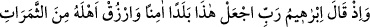
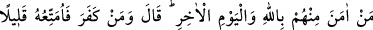
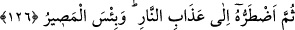

Kul bu mertebeye eriştiği vakit, Rabbine gerçek anlamda secde ve rükû edip, O’nunla
münâcât sırrına erişmiş olur.
126. İbrâhîm de demişti ki: Ey Rabbim! Burayı emin bir şehir yap, halkından
Allah’a ve âhıret gününe inananları çeşitli meyvelerle besle. Allah buyurdu ki: Kim
inkâr ederse onu az bir süre faydalandırır, sonra cehennem azâbına sürüklerim. Ne
kötü varılacak yerdir orası!
Beldenin emin kılınmasından murâd; halkının, kuraklık, kıtlık, tufan, zelzele, delilik,
cüzzâm, alatenlilik gibi maddî ve mânevî âfetlerden emin olmasıdır. İbrâhîm (a.s.), bu
duâyı Mekke’ye ilk geldiğinde yapmıştı. Zira o vakit İbrâhîm (a.s.), İsmâîl ve Hacer’i
buraya bırakıp Şam’a yöneldiğinde Hacer kendisine:
– “Bizi böyle susuz ve kurak bir yerde kime bırakıp da gidiyorsun?” diye sormuştu.
İbrâhîm’in cevap vermemesi üzerine:
– “Bunu sana Allah mı emrediyor?” demiş, İbrâhîm “evet” deyince:
– “Allah bizi perişan etmez,” deyip râzı oldu.
İbrâhîm (a.s.) oradan ayrılıp Kedâ tepesine geldiğinde vadiye yönelip: “Ya Rabbi!
Âilemi ekinsiz bir vadiye yerleştirdim...” (İbrâhîm sûresi, 14/37) diyerek, onları
koruması ve gözetmesi için Allah’a duâ etti.
“Halkından Allah’a ve âhıret gününe inananları çeşitli ürünlerle besle.” Buradaki
“ürünlerden” maksad, topraktan ve ağaçlardan elde edilen yiyeceklerdir. Bu, gıda
maddesi ve meyve istemektir. Bilinen yiyeceklerin her yerde bulunabileceği gözönüne
alınarak, “semerât”tan maksadın -diğer yiyeceklere nazaran daha ender bulunan-
“meyveler” olduğunu söyleyenler de vardır.
Hz. İbrâhîm, ehli için güven ve rahat bir hayat dilemişti. Allah Teâlâ da duâsını kabûl
buyurdu. Rivâyete göre Cebrâîl’e, Filistin bölgesinde meyvesi bol olan bir köyü
Mekke’ye nakletmesini emretti. Cebrâîl, o köye gelip kökünden söktü ve getirdi.
Kâbe’nin etrafında yedi kez tavâf ettirdikten sonra Mekke’ye üç konaklık mesafede bir
yere bıraktı. Burası Tâif’dir. Adını Cebrâîl’in kendisiyle tavâf etmesinden almıştır.
Mekke’nin meyvesinin çoğu buradan gelmektedir. Diğer kıtalardan da Mekke’ye birçok
meyve gelmektedir. Öyle ki, burada bir günde hem yaz, hem güz, hem de ilkbahar
meyvesini birarada bulmak mümkündür.
Hz. İbrâhîm aleyhisselâm: “Allah’a ve âhıret gününe inananları çeşitli meyvelerle
rızıklandır.” yâni sadece mü’min olan kimseleri rızıklandır, diye duâ etmişti. Allah